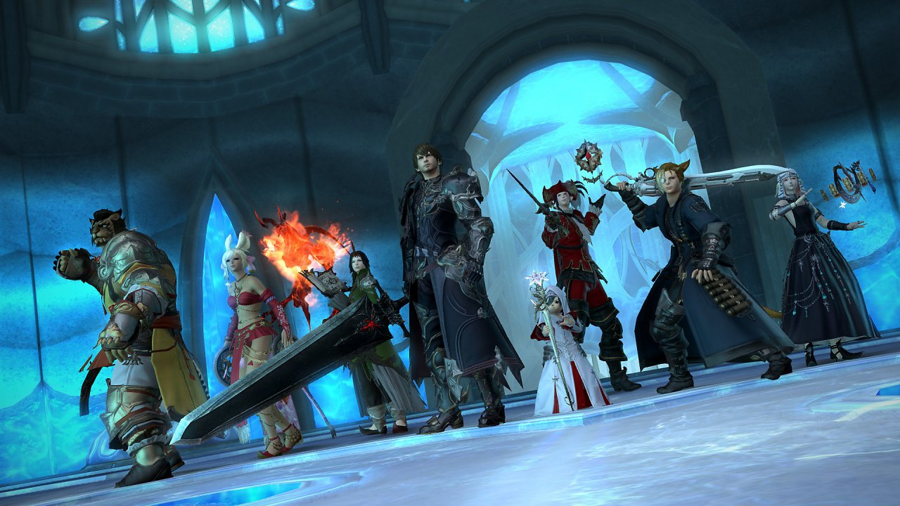
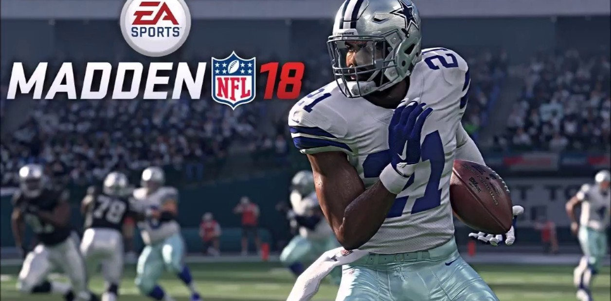

Un videojuego es un juego electrónico en el que una o más personas interactúan, por medio de un controlador, con un dispositivo que muestra imágenes de video. Este dispositivo electrónico, conocido genéricamente como «plataforma», puede ser una computadora, una máquina arcade, una videoconsola o un dispositivo portátil, como por ejemplo un teléfono móvil. Los videojuegos son, año por año, una de las principales industrias del arte y el entretenimiento.
Típicamente, los videojuegos recrean entornos y situaciones virtuales en los que el videojugador puede controlar a uno o varios personajes (o cualquier otro elemento de dicho entorno), para conseguir uno o varios objetivos dentro de unas reglas determinadas.
Dependiendo del videojuego, una partida puede disputarla una sola persona contra la máquina, dos o más personas en la misma máquina, o bien múltiples jugadores a través de una red LAN o en línea vía Internet, compitiendo colaborativamente contra la máquina o entre sí.
Existen videojuegos de muchos tipos. Algunos de los géneros más representativos son los videojuegos de acción, rol, estrategia, simulación, deportes o aventura.
--Generos--
Los videojuegos se pueden clasificar en géneros atendiendo a factores como el sistema de juego, el tipo de interactividad con el jugador, sus objetivos, etc. La evolución de los videojuegos desde sus comienzos ha dado lugar a una variedad creciente y cambiante de géneros, muchas veces en relación con lo que los avances en la tecnología han ido haciendo posible. Entre los géneros de videojuegos más populares están los de acción, estrategia, rol, aventura, rompecabezas, simulación, deportes o carreras, cada uno de ellos con varios subgéneros. Pero aquí te mostrare solo unos de los más populares hoy en día.

